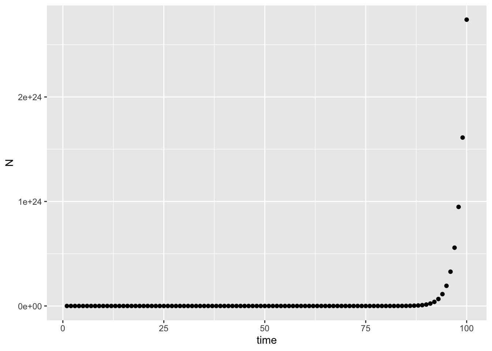

Create either an R script (.R file) or R Markdown document (.Rmd) to save all of your work for today.
my_fun, which takes two values
(x and y), adds them together, and returns the added
value.my_fun <- function(x, y) {
z <- x + y
return(z)
}
my_fun(17, 3)## [1] 20Please choose two numbers for x and y, and use them
to execute my_fun(x,y).
Your turn! Write a function called times_seven - it
should take a single argument, multiply that value by 7, and return the
new value.
See the for loops I have written below:
# note how the loop changes the value of the variable x for
# each iteration of the loop: first x=1 and 'print(x)' is
# executed. Then x=2, then x=3, and so on.
for (x in 1:5) {
print(x)
}## [1] 1
## [1] 2
## [1] 3
## [1] 4
## [1] 5for (i in 1:5) {
z <- i + 6
print(z)
}## [1] 7
## [1] 8
## [1] 9
## [1] 10
## [1] 11a <- rep(NA, 5)
for (i in 1:5) {
a[i] <- i
}
a## [1] 1 2 3 4 5b <- c("I", "love", "R")
for (i in 1:length(b)) {
print(b[i])
}## [1] "I"
## [1] "love"
## [1] "R"Your turn - For each of three values of volume,
v <- c(1.6,3,8), calculate the mass, where
m <- 2.65 * volume ^ 0.9. Please calculate this in a
loop. You can print the values within the loop.
I built a function to calculate the number of mice in a yard using equation 2.4 from Otto & Day Ch2:
mice <- function(Nt,d,b,m){
Nt1 <- (1+b)*(1-d)*Nt + m
return(Nt1)
}To do this, you should approach the problem in a few steps:
I demonstrate how this can work below. I use a different function as an example, \(P(t+1) = \frac{bP(t)}{1+cP(t)}\):
# Step 1. Example parameters
b <- 1.7
c <- .15
Pt <- 6
# Step 2. Example equation function
example_equation_function <- function(b,c,Pt){
Pt1 <- (b*Pt) / (1 + c*Pt)
return(Pt1)
}
# Step 3. Make sure the function works
Pt1 <- example_equation_function(b,c,Pt)
# Step 4. Create a new variable to hold future values of P
P <- rep(NA,100)
# Step 5. Create a for loop to iteratively calculate P
P[1] <- Pt
for(i in 2:100){
P[i] <- example_equation_function(b,c,Pt)
Pt <- P[i]
}
# Step 6. Plot P over time
plot(P,xlab="time",ylab="P",pch=19,col="black")dat <- as.data.frame(P)
dat$time <- as.numeric(rownames(dat))
library(ggplot2)
ggplot2::ggplot(dat,aes(time,P)) + geom_point()I show below a simulation for exponential population growth in discrete time, \[ n_{t+1} = Rn(t)\]
I created the below plot of population size (n) over time (t) using the following values for parameters: R = 1.7, \(N_0\) = 42, evaluated for 100 time steps.
## Step 1. Write values for the parameters in the model
## (and initial values of state variables) R - the
## population growth rate, expressed as the number of
## individuals that replace an individual in the population
## (where R=1 is each individual replacing itself, and
## therefore no change in population size over time) --> N
## (-infinity - infinity)
R <- 1.7
# N0 - the initial population size
N0 <- 42
## Step 2. Write a function that will calculate values of
## number of individuals from one time step to the next.
disc_exp <- function(R, N0) {
Nt1 <- R * N0
return(Nt1)
}
## Step 3. Call the function
disc_exp(R, N0)## [1] 71.4# Step 4. Create a new variable to hold future values of N
N <- rep(NA, 100)
# Step 5. Create a for loop to iteratively calculate N
N[1] <- N0
for (i in 2:100) {
N[i] <- disc_exp(R, N0)
N0 <- N[i]
}
# Step 6. Plot N over time
plot(N, xlab = "time", ylab = "N_mice", pch = 19, col = "black")dat <- as.data.frame(N)
dat$time <- as.numeric(rownames(dat))
library(ggplot2)
ggplot2::ggplot(dat, aes(time, N)) + geom_point()
Please create a plot for parameters: R = 0.7, \(N_0\) = 1042.
Please modify the simulation in #5 to create a simulation of the logistic growth model in discrete time (equation 3.5a in Otto & Day Chapter 3), using parameter values \(n_0 = 4\), K = 1400, r = 1.21, evaluated for 100 time steps:
\[n_{t+1} = n(t) + rn(t)(1 - \frac{n(t)}{K})\] Hint: You can use the following formula:
disc_log <- function(r,Nt=N0,K){
Nt1 <- Nt + r*Nt*(1-Nt/K)
return(Nt1)
}